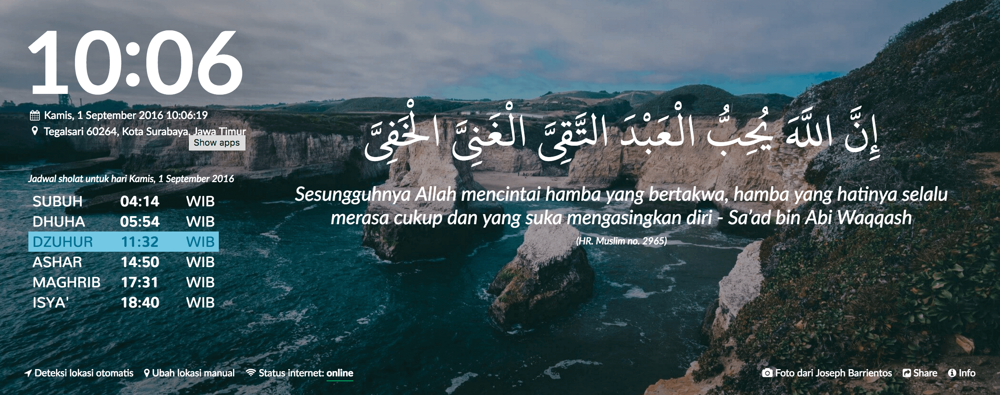
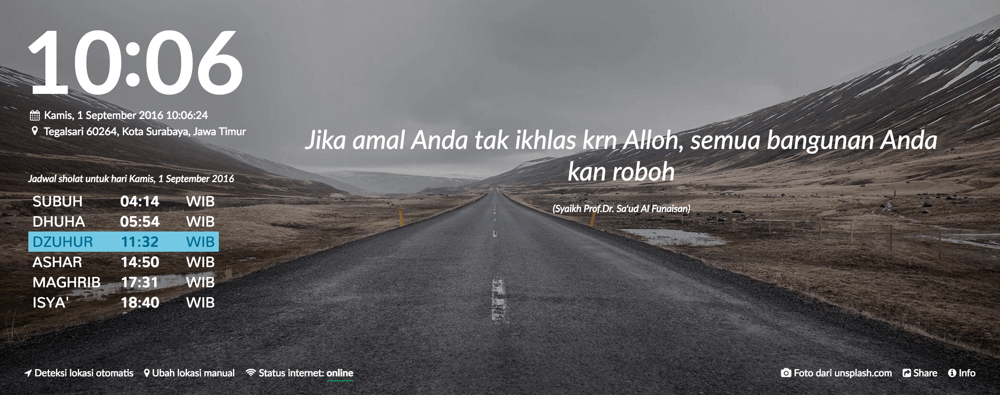
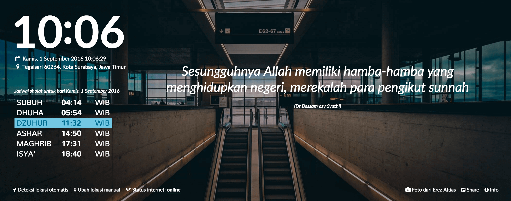
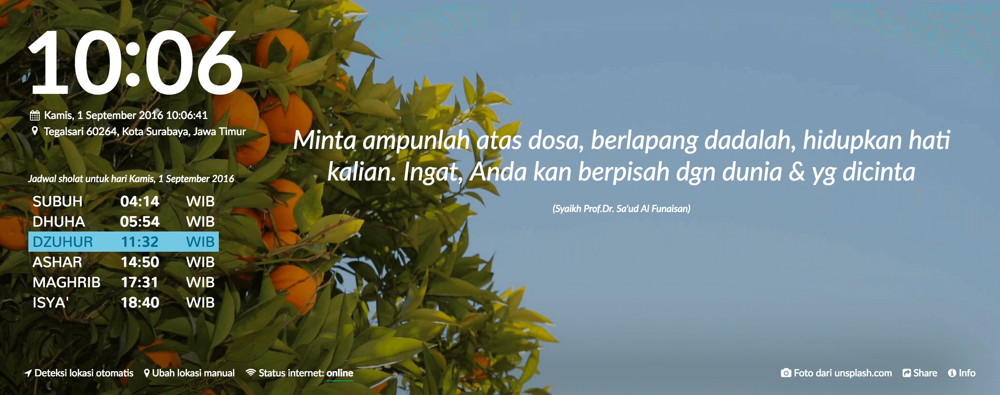
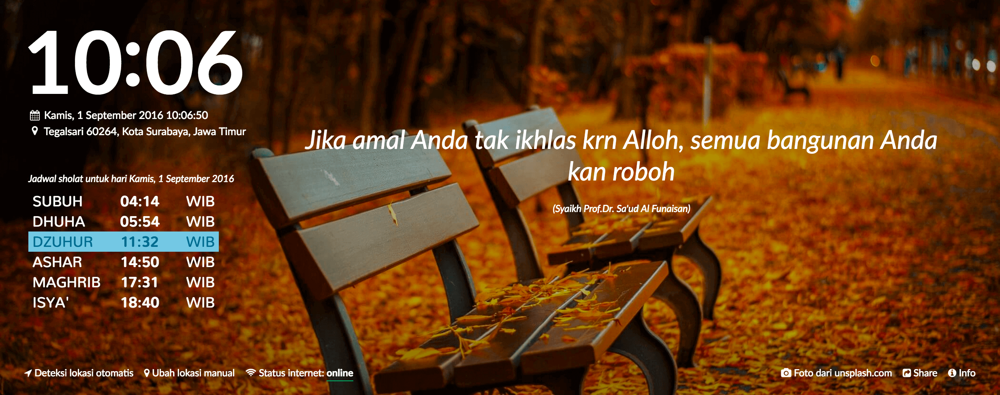

- 
- 
- 

- 
- 
Ada cukup banyak konten yang insyaaAllah bermanfaat dalam plugin ini. Konten yang kami pilih adalah
yang sifatnya mengajak untuk berbuat kebaikan, dan pengingat.
Anda juga bisa membantu kami dengan berkontribusi konten.
Konten-konten yang dikirim nantinya akan filter terlebih dahulu, jika memenuhi point berikut akan
kami approve.
- Isi konten sifatnya tidak menyerang atau memojokkan golongan lain, agama lain, ataupun
organisasi tertentu
- Konten bersifat general, maksudnya bisa dikonsumsi dan tidak menyakiti
- Mengajak menuju kebaikan, dan dirangkum dengan kalimat yang halus
Selain konten yang banyak, disajikan juga cukup banyak gambar penyejuk mata.
Setiap jeda waktu
tertentu gambar akan secara otomatis di-refresh.
Kontribusi Gambar & Quote
Kami akan sangat senang sekali jika ada yang mau berkontribusi gambar atau quote.
Untuk sekarang sumber konten masih kami isi sendiri,
sedangkan gambar kebanyakan dari unsplash.com dan dari sumbangsih beberapa kontributor.
Silakan email kami untuk berkontribusi. Klik tombol berikut.